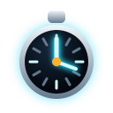

The science of reaction time
Reaction time is the total duration it takes to respond to a stimulus. It is the time lag between when you first perceive something — the ruler beginning to fall — and when you initiate a motor response, such as closing your fingers. This process involves your eyes detecting movement, signals travelling to your brain, your brain processing the information, and finally sending a signal to your hand muscles. It is a key measure of your central nervous system's processing speed.
How the ruler measures it
The ruler is in free fall, so the distance it travels depends only on time and gravity:
d = ½ g t²
- d — the distance the ruler falls (what we read off the scale)
- g — acceleration due to gravity, a constant ≈ 9.8 m/s²
- t — the time elapsed, which is your reaction time
Rearranging to solve for time gives the formula this lab uses:
t = √(2d / g)
The bench measures the distance the ruler fell, plugs it into this formula, and reports your reaction time.
Worked example
Suppose you catch the ruler at the 20.0 cm mark. Convert to metres, then substitute:
t = √(2 × 0.200 / 9.8) = √0.0408 = 0.202 s
Roughly 200 milliseconds — a typical adult visual reaction time.

Reference: distance to time
| Catch distance | Reaction time | Reads as |
|---|
| 5 cm | 0.101 s | Exceptional |
| 10 cm | 0.143 s | Very fast |
| 15 cm | 0.175 s | Fast |
| 20 cm | 0.202 s | Typical adult |
| 30 cm | 0.247 s | Average |
| 40 cm | 0.286 s | Below average |
| 50 cm | 0.319 s | Slow / distracted |
This is why rule length sets the difficulty: a 30 cm rule runs out of scale at 0.247 s, so a slower reaction simply cannot be measured with it.
Guiding questions
How consistent is your reaction time? Look at the standard deviation. A smaller number means your reaction times are more consistent.
Why take an average of multiple trials? A single trial can be affected by random chance — a distraction, or a lucky guess. Averaging multiple trials gives a more reliable and accurate measure of your typical reaction time.
Why does the median matter too? One very slow trial drags the mean upward. The median ignores that outlier, so comparing the two tells you whether a result was skewed by a single bad trial.
Lab notes
The classic pen-and-paper version of this experiment uses a real ruler dropped between a partner's fingers. It has been used in psychology and neuroscience teaching for decades because it needs no equipment beyond a ruler, yet it produces genuinely useful data. Known factors that shift the numbers: fatigue, caffeine, practice, age, and whether you were expecting the stimulus.